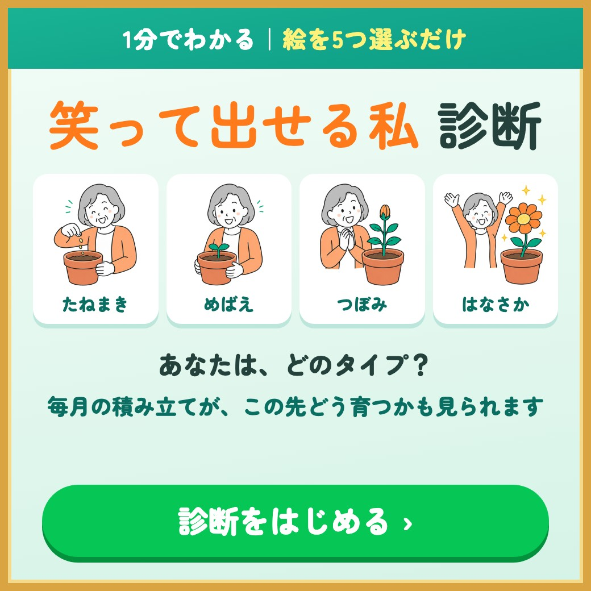

- 届く人
- 新しいLPから追加した人（Xから来た人は今の別の文のまま）
- 今
- お礼＋3つの質問カード
%line_name%さん
ご登録ありがとうございます。
「おばあちゃんでもできる お金の増やし方 オンライン勉強会」主催の森川です😊
最初に、1分の診断をどうぞ。
絵を5つ選ぶだけで、この3つが届きます。
・あなたのお金のタイプ
・毎月の積み立てが、この先どう育つか
・あなたの回でお話しする3つ
日程をすぐ見たい方は、下の「先に、空いている日を見る」からどうぞ📅

診断をはじめる（1分）
押すと：診断ページ
先に、空いている日を見る
押すと：予約ページ
- 今の「登録直後_3問カード」は下書きにして残します。3つの質問は診断の中に入るので、別では送りません。
- 【第2版】LPが5か所で「すぐに日程が届きます」と約束しているので、日程の1行を足しました。